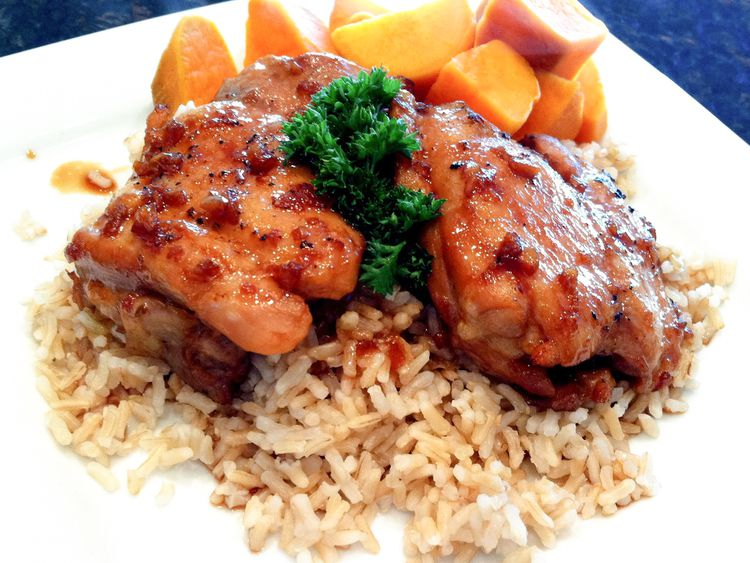

Filipino Chicken Adobo

Ingredients
- 1 1/2 cups soy sauce
- 1 1/2 cups water
- 3/4 cups vinegar
- 3 tablespoons honey
- 1 1/2 tablespoons minced garlic
- 3 bay leaves
- 1/2 teaspoon black pepper
- 3 pounds skinless, boneless chicken thighs
Directions
- Preheat an outdoor grill for high heat, and lightly oil grate.
- In a large pot, mix soy sauce, water, vinegar, honey, garlic, bay leaves, and pepper.
Bring the mixture to a boil and place the chicken into the pot.
Reduce heat, cover, and cook 35 to 40 minutes.
- Remove chicken, drain on paper towels, and set aside.
Discard bay leaves. Return the mixture to a boil, and cook until reduced to about 1 1/2 cups.
- Place chicken on the prepared grill, about 5 minutes on each side, until browned and crips.
Serve with the remaining soy sauce mixture.